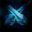
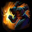
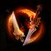
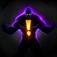
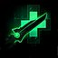
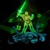
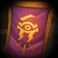
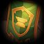
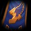
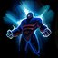

2018-03-27 Rework Diffs
Looking for an overview of changes from a recent hero rework? You've found the place. Green stuff is new, red has been removed. Refer to the Legend below for specifics on box and line highlights.
Legend
-
New
This talent is all shiny and new, and completely green in color -
Changed
UpdatedThe green highlights indicate the new descriptionWhile the red highlights show what the description used to say -
Moved
Moved from level XThis talent has been moved levels; it will have a blue label describing the move.Will generally be followed by a red section listing the old description too -
Unchanged
These white boxes are exactly as they were before; nothing changed here -
Removed
This removed talent is entirely red and sad because it no longer exists for this hero :(
Varian
Developer Comment: We're making a simple change to Varian by moving his Heroic Abilities to Level 4, but this will have large impact on the way he feels during a game. By allowing Varian to get his Heroic Ability earlier, he can fulfill the role his team needs before one team develops a significant lead over the other. This increase in Varian's early-game power justifies reducing some of the overwhelming power he gains after level 10, and creates a more even experience for Varian and his opponents throughout a game.
Stats
- Health reduced from 2322 to 1850.
- Health Regeneration reduced from 4.8375 to 3.8542.
- Health scaling increased from 3% to 4% per level.
- Basic Attack damage reduced from 91 to 74.
- Basic Attack damage scaling increased from 3.5% to 4%.
Abilities
-
Lion's Fang
UpdatedMana: 50 Cooldown: 8Create a shockwave that travels in a straight line, dealing 150 (+4% per level) damage and Slowing enemies by 35% for 1.5 seconds. Each enemy hit heals Varian for 35 (+4% per level), increased to 140 (+4% per level) against Heroes. -

Parry
UpdatedMana: 20 15 Cooldown: 10 8Parry all incoming Basic Attacks for 1.25 seconds, reducing their damage by 100%. -

Charge
Mana: 45 Cooldown: 12Charge to the target enemy, dealing 50 (+4% per level) damage and slowing them by 75% for 1 second. -
Taunt
Moved to level 4Mana: 20 Cooldown: 16Silence a target Hero and force them to attack Varian for 1.25 seconds. Passive: Maximum Health increased by 30%. Passive: Gain 15 Armor. -

Twin Blades of Fury
Moved to level 4Basic Attacks reduce Heroic Strike's cooldown by 9 seconds, and increase Varian's Movement Speed by 30% for 2 seconds. Passive: Attack Speed increased by 100%. Passive: Base Attack Damage reduced by 20%. -
Colossus Smash
Moved to level 4Mana: 40 Cooldown: 20Smash a target enemy, dealing 160 (+4% per level) damage and lowering their Armor by 20 25 for 3 seconds, causing them to take 20% 25% increased damage. Passive: Base Attack Damage increased by 100%. Passive: Maximum Health reduced by 10%. -
Heroic Strike
UpdatedCooldown: 18Every 18 seconds, Varian's next Basic Attack deals 125 (+4% per level) 140 (+3.5% per level) bonus damage. Basic Attacks reduce this cooldown by 2 seconds.
Talents
1
-

High King's Quest
Quest: Hit 50 Heroes with Basic Attacks. Quest: Participate in 5 Hero Takedowns. Quest: Gather 20 Regeneration Globes. Reward: Completing a Quest grants 10 Base Attack Damage. Completing all 3 Quests grants an additional 45 Base Attack Damage. -
Lion's Maw
Quest: Every time Lion's Fang hits a Hero, increase its damage by 4, up to 120. Reward: After hitting 30 Heroes, the slow is increased to 50% and its duration is increased to 2 seconds. -
Overpower
UpdatedWhen Parry blocks a Hero's Basic Attack, Heroic Strike's cooldown is refreshed and the next one does 30% 20% more damage.
4
-
Colossus Smash
Moved from level 10Cooldown: 20Smash a target enemy, dealing 160 (+4% per level) damage and lowering their Armor by 20 25 for 3 seconds, causing them to take 20% 25% increased damage. Passive: Base Attack Damage increased by 100%. Passive: Maximum Health reduced by 10%. -
Taunt
Moved from level 10Cooldown: 16Silence a target Hero and force them to attack Varian for 1.25 seconds. Passive: Maximum Health increased by 30%. Passive: Gain 15 Armor. -
Twin Blades of Fury
Moved from level 10Basic Attacks reduce Heroic Strike's cooldown by 9 seconds, and increase Varian's Movement Speed by 30% for 2 seconds. Passive: Attack Speed increased by 100%. Passive: Base Attack Damage reduced by 20%.
7
-
Lionheart
Increase Lion's Fang's healing from Heroes by 50%. -

Second Wind
Basic Attacks heal Varian for 1.17% of his maximum Health. While below 50% Health, they also heal him for 50% of the damage dealt. -

Victory Rush
UpdatedEvery 30 60 seconds, Varian's next Basic Attack will heal him for 350 400 (+4% per level) Health. When a nearby enemy Minion or Monster dies, the cooldown is reduced by 10 15 seconds. -
Live by the Sword
Increase the duration of Parry by 40%. If at least 4 Hero Basic Attacks are blocked with a single Parry, its cooldown is reduced by 2 seconds.
10
-
Shield Wall
Moved from level 4Parry grants Protected, preventing all incoming damage while active. Additionally, Parry's cooldown is reduced by 5 seconds, but it loses 1 charge. -
Warbringer
Moved from level 4Reduce Charge's cooldown by 8 seconds and Mana cost from 45 to 22. Additionally, Charge can be cast on allied Heroes.
13
-
Juggernaut
Charge deals bonus damage to Heroes equal to 4% of their maximum Health. -
Mortal Strike
Heroes hit by Heroic Strike receive 40% reduced healing for 4 seconds. -
Shattering Throw
Cooldown: 30Activate to throw a sword at a target Hero that deals 50 (+4% per level) damage, and up to 1400 (+4% per level) bonus damage to their Shields. Passive: Basic Attacks against Heroes deal up to 200% bonus damage to Shields.
16
-

Banner of Dalaran
Cooldown: 45Activate to place a Banner that grants 20% increased Spell Power to nearby allied Heroes. Lasts 12 seconds. -

Banner of Ironforge
Cooldown: 45Activate to place a Banner that grants 20 Armor to nearby allied Heroes, reducing damage taken by 20%. Lasts 12 seconds. -

Banner of Stormwind
Cooldown: 45Activate to place a Banner that grants 25% increased Movement Speed to nearby allied Heroes. Lasts 12 seconds.
20
-

Demoralizing Shout
UpdatedCooldown: 25Activate to demoralize nearby enemy Heroes, reducing damage they deal by 40% 25% for 5 seconds. -
Frenzy
Twin Blades of Fury increases Varian's Attack Speed by an additional 15%, and Basic Attacks increase his Movement Speed by an additional 10%. -
Glory to the Alliance
Banner now also increases health regeneration and all healing received for nearby allied Heroes by 50%, and the cooldown is reduced by 20 seconds. -
Master at Arms
Colossus Smash affects all enemies near the target, and its cooldown is reduced by 10 seconds. -
Vigilance
Being hit by a Hero Basic Attack reduces the cooldown of Taunt by 1 seconds.